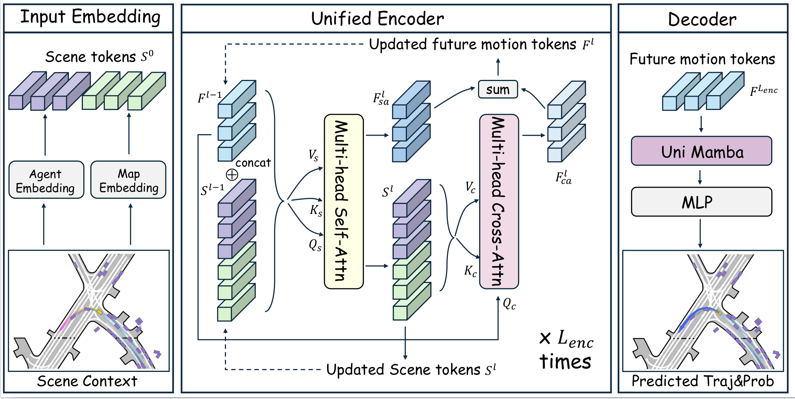
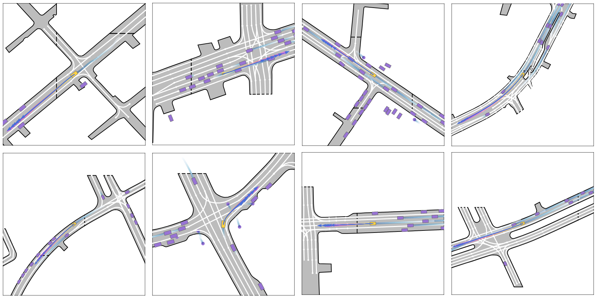
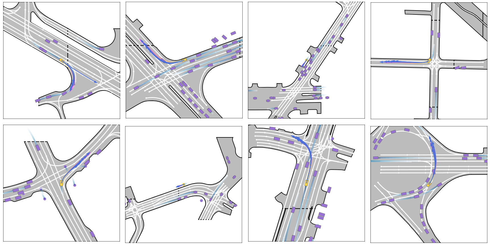

Overview
Abstract
Motion forecasting represents a critical challenge in autonomous driving systems, requiring accurate prediction of surrounding agents' future trajectories. While existing approaches predict future motion states with the extracted scene context feature from historical agent trajectories and road layouts, they suffer from the information degradation during the scene feature encoding. To address the limitation, we propose HAMF, a novel motion forecasting framework that learns future motion representations with the scene context encoding jointly, to coherently combine the scene understanding and future motion state prediction . We first embed the observed agent states and map information into 1D token sequences, together with the target multi-modal future motion features as a set of learnable tokens. Then we design a unified Attention-based encoder, which synergistically combines self-attention and cross-attention mechanisms to model the scene context information and aggregate future motion features jointly. Complementing the encoder, we implement the Mamba module in the decoding stage to further preserve the consistency and correlations among the learned future motion representations, to generate the accurate and diverse final trajectories.
Method

The left part presents the input embedding module with an intersection driving scenario. The ground truth future trajectory is shown with the gradient pink line for illustration purposes, which is not used in the input. The historical trajectories and surrounding map are embedded and combined as initial scene tokens, then concatenated with the initial future motion tokens for the input of the unified encoder. The middle part denotes the encoding process within the l-th encoder layer. The dashed lines represent the input for the subsequent encoding layer. With several iterations in the encoder, the learned future motion tokens are obtained and decoded with the Mamba block and multi-layer MLPs to generate the final prediction, shown in the right part.
Evaluations on Argoverse 2 benchmark

More Visualization Results


Qualitative results on the challenging scenarios of AV2 validation set. Surrounding agents are represented by the bounding boxes in purple and the focal agent in yellow. The line in gradient pink indicates the ground truth and the line in deep blue indicates the multi-modal predicted trajectory.
BibTeX
The arxiv version is ready.
Future work
The proposed model can be extended as the learning-based motion planner, and integrated with
the perception module as an end-to-end autonomous driving framework.
The extension work is on-going. Please stay tuned for the further update!